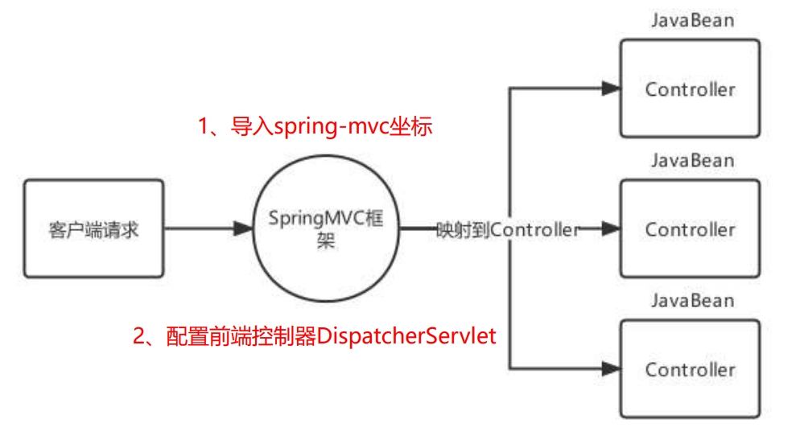

SpringMVC
SpringMVC简介
SpringMVC
MVC 是模型(Model)、视图(View)、控制器(Controller)的简写，其核心思想是通过将业务逻辑、数据、显示分离来组织代码。
M：Model，模型层，指工程中的JavaBean，作用是处理数据
JavaBean分为两类：
一类称为实体类Bean：专门存储业务数据的，如 Student、User 等
一类称为业务处理 Bean：指 Service 或 Dao 对象，专门用于处理业务逻辑和数据访问。
V：View，视图层，指工程中的html或jsp等页面，作用是与用户进行交互，展示数据
C：Controller，控制层，指工程中的servlet，作用是接收请求和响应浏览器
SpringMVC是Spring对MVC的实现，对传统的MVC做了扩展，将model层分为了业务模型Service和数据模型Repository，controller层拆分为了前端控制器DispatchServlet和后端控制器Controller，简化了Web开发。

导入Spring整合SpringMVC的坐标：spring-webmvc
在web.xml中配置SpringMVC的前端控制器ServletDispatcher
<servlet>
<servlet-name> DispatcherServlet</servlet-name>
<servlet-class> org.springframework.web.servlet.DispatcherServlet</servlet-class>
<!--指定springMVC配置文件位置-->
<init-param>
<param-name> contextConfigLocation</param-name>
<param-value> classpath:spring-mvc.xml</param-value>
</init-param>
<!--服务器启动就创建-->
<load-on-startup> 2</load-on-startup>
</servlet>
<servlet-mapping>
<servlet-name> DispatcherServlet</servlet-name>
<url-pattern> /</url-pattern>
</servlet-mapping>
编写一个控制器Controller，配置映射信息
@Controller
public class UserController {
@RequestMapping ( "/show" )
public String show (){
System . out . println ( "show 执行...." );
//视图跳转到index.jsp
return "/index.jsp" ;
}
}
创建springMVC的核心配置文件 spring-mvc.xml，并配置组件扫描web层
<context:component-scan base-package= "com.itheima.controller" />
SpringMVC关键组件
组件
描述
常用组件
处理器映射器：HandlerMapping
匹配映射路径对应的Handler，返回可执行的处理器链对象HandlerExecutionChain对象
RequestMappingHandlerMapping
处理器适配器：HandlerAdapter
匹配HandlerExecutionChain对应的适配器进行处理器调用，返回视图模型对象
RequestMappingHandlerAdapter
视图解析器：ViewResolver
对视图模型对象进行解析
InternalResourceViewResolver
SpringMVC的默认组件，SpringMVC 在前端控制器 DispatcherServlet加载时，就会进行初始化操作，在进行初始化时，就会加载SpringMVC默认指定的一些组件，这些默认组件配置在 DispatcherServlet.properties 文件中，该文 件存在与spring-webmvc-5.3.7.jar包下的 org\springframework\web\servlet\DispatcherServlet.properties
这些默认的组件是在DispatcherServlet中进行初始化加载的，在DispatcherServlet中存在集合存储着这些组件， SpringMVC的默认组件会在 DispatcherServlet 中进行维护，但是并没有存储在与SpringMVC的容器中
当我们在Spring容器中配置了HandlerMapping，则就不会在加载默认的HandlerMapping策略了，原理比较简单，DispatcherServlet 在进行HandlerMapping初始化时，先从SpringMVC容器中找是否存在HandlerMapping，如果存在直接取出容器中的HandlerMapping，在存储到 DispatcherServlet 中的handlerMappings集合中去。
SpringMVC的请求处理
请求映射路径的配置
配置映射路径，映射器处理器才能找到Controller的方法资源
相关注解
作用
使用位置
@RequestMapping
设置控制器方法的访问资源路径，可以接收任何请求
方法和类上
@GetMapping
设置控制器方法的访问资源路径，可以接收GET请求
方法和类上
@PostMapping
设置控制器方法的访问资源路径，可以接收POST请求
方法和类上
@RequestMapping注解：
@Target ({ ElementType . TYPE , ElementType . METHOD })
@Retention ( RetentionPolicy . RUNTIME )
@Documented
@Mapping
@Reflective ({ ControllerMappingReflectiveProcessor . class })
public @interface RequestMapping {
String name () default "" ;
@AliasFor ( "path" )
String [] value () default {};
@AliasFor ( "value" )
String [] path () default {};
RequestMethod [] method () default {};
String [] params () default {};
String [] headers () default {};
String [] consumes () default {};
String [] produces () default {};
}
value属性
@RequestMapping注解的value属性通过请求的请求地址匹配请求映射
@RequestMapping注解的value属性是一个字符串类型的数组，表示该请求映射能够匹配多个请求地址所对应的请求
@RequestMapping注解的value属性必须设置，至少通过请求地址匹配请求映射
method属性
HTTP 协议定义了八种请求方式，在 SpringMVC 中封装到了下面这个枚举类：
public enum RequestMethod {
GET , HEAD , POST , PUT , PATCH , DELETE , OPTIONS , TRACE
}
@RequestMapping注解的method属性通过请求的请求方式 （get或post）匹配请求映射。默认任何请求方式都可以访问
@RequestMapping注解的method属性是一个RequestMethod类型的数组，表示该请求映射能够匹配多种请求方式的请求
若当前请求的请求地址满足请求映射的value属性，但是请求方式不满足method属性，则浏览器报错405：Request method ‘POST’ not supported
注：
1、对于处理指定请求方式的控制器方法，SpringMVC中提供了@RequestMapping的派生注解
处理get请求的映射–>@GetMapping
处理post请求的映射–>@PostMapping
处理put请求的映射–>@PutMapping
处理delete请求的映射–>@DeleteMapping
2、常用的请求方式有get，post，put，delete
但是目前浏览器只支持get和post，若在form表单提交时，为method设置了其他请求方式的字符串（put或delete），则按照默认的请求方式get处理
若要发送put和delete请求，则需要通过spring提供的过滤器HiddenHttpMethodFilter
param属性
@RequestMapping注解的params属性通过请求的请求参数匹配请求映射
@RequestMapping注解的params属性是一个字符串类型的数组，可以通过四种表达式设置请求参数和请求映射的匹配关系：
“param”：要求请求映射所匹配的请求必须携带param请求参数
“!param”：要求请求映射所匹配的请求必须不能携带param请求参数
“param=value”：要求请求映射所匹配的请求必须携带param请求参数且param=value
“param!=value”：要求请求映射所匹配的请求必须携带param请求参数但是param!=value
headers属性
@RequestMapping注解的headers属性通过请求的请求头信息匹配请求映射
@RequestMapping注解的headers属性是一个字符串类型的数组，可以通过四种表达式设置请求头信息和请求映射的匹配关系
“header”：要求请求映射所匹配的请求必须携带header请求头信息
“!header”：要求请求映射所匹配的请求必须不能携带header请求头信息
“header=value”：要求请求映射所匹配的请求必须携带header请求头信息且header=value
“header!=value”：要求请求映射所匹配的请求必须携带header请求头信息且header!=value
若当前请求满足@RequestMapping注解的value和method属性，但是不满足headers属性，此时页面显示404错误，即资源未找到
请求数据的接收
param参数接收
1. 直接接收
只要形参数名和类型与传递参数相同，即可自动接收!
@Controller
@RequestMapping ( "/param" )
public class ParamController {
/**
* 前端请求: http://localhost:8080/param/value?name=xx&age=18
*
* 可以利用形参列表,直接接收前端传递的param参数!
* 要求: 参数名 = 形参名
* 类型相同
* 出现乱码正常，json接收具体解决！！
* @return 返回前端数据
*/
@GetMapping ( value = "/value" )
@ResponseBody
public String setupForm ( String name , int age ){
System . out . println ( "name = " + name + ", age = " + age );
return name + age ;
}
}
2. @RequestParam注解
指定绑定的请求参数名
要求请求参数必须传递
为请求参数提供默认值
默认情况下，使用此注解的方法参数是必需的，但可以通过将 @RequestParam 注解的 required 标志设置为 false！
/**
* 前端请求: http://localhost:8080/param/data?name=xx&stuAge=18
*
* 使用@RequestParam注解标记handler方法的形参
* 指定形参对应的请求参数@RequestParam(请求参数名称)
*/
@GetMapping ( value = "/data" )
@ResponseBody
public Object paramForm ( @RequestParam ( "name" ) String name ,
@RequestParam ( value = "stuAge" , required = false , defaultValue = "18" ) int age ){
System . out . println ( "name = " + name + ", age = " + age );
return name + age ;
}
3. 接收数组或集合数据
接收数组、集合、Map数据，客户端传递多个同名参数时，可以使用集合接收，但是集合和map需要使用@RequestParam告知框架传递的参数是要同名设置的，不是对象属性设置的。
/**
* 前端请求: http://localhost:8080/param/mul?hbs=吃&hbs=喝
*
* 一名多值,可以使用集合接收即可!但是需要使用@RequestParam注解指定
*/
@GetMapping ( value = "/mul" )
@ResponseBody
public Object mulForm ( @RequestParam List < String > hbs ){
System . out . println ( "hbs = " + hbs );
return hbs ;
}
4. 实体接收
接收实体JavaBean属性数据，单个JavaBean数据：提交的参数名称只要与Java的属性名一致，就可以进行自动封装。
public class User {
private String username ;
private Integer age ;
private String [] hobbies ;
private Date birthday ;
private Address address ;
//... 省略get和set方法 ...
}
@Controller
@RequestMapping ( "/param" )
public class ParamController {
// 前端请求: http://localhost:8080/param/user?username=haohao&age=35&hobbies=eat&hobbies=sleep
@RequestMapping ( "/user" )
@ResponseBody
public String addUser ( User user ) {
// 在这里可以使用 user 对象的属性来接收请求参数
System . out . println ( "user = " + user );
return "success" ;
}
}
接收实体JavaBean属性数据，嵌套JavaBean数据：提交的参数名称用 . 去描述嵌套对象的属性关系即可。username=haohao&address.city=tianjin&address.area=jinghai
路径参数接收
@PathVariable 注解允许将 URL 中的占位符映射到控制器方法中的参数。
例如，如果我们想将 /user/{id} 路径下的 {id} 映射到控制器方法的一个参数中，则可以使用 @PathVariable 注解来实现。
/**
* 动态路径设计: /user/{动态部分}/{动态部分} 动态部分使用{}包含即可! {}内部动态标识!
* 形参列表取值: @PathVariable Long id 如果形参名 = {动态标识} 自动赋值!
* @PathVariable("动态标识") Long id 如果形参名 != {动态标识} 可以通过指定动态标识赋值!
*
* 访问测试: /param/user/1/root -> id = 1 uname = root
*/
@GetMapping ( "/user/{id}/{name}" )
@ResponseBody
public String getUser ( @PathVariable Long id ,
@PathVariable ( "name" ) String uname ) {
System . out . println ( "id = " + id + ", uname = " + uname );
return "user_detail" ;
}
json参数接收
接收Json数据格式数据，Json数据都是以请求体的方式提交的，且不是原始的键值对格式的，所以我们要使用 @RequestBody注解整体接收该数据。
@RequestBody 注解表示当前方法参数的值应该从请求体中获取，并且需要指定 value 属性来指示请求体应该映射到哪个参数上。
@PostMapping ( "/person" )
@ResponseBody
public String addPerson ( @RequestBody Person person ) {
// 在这里可以使用 person 对象来操作 JSON 数据中包含的属性
return "success" ;
}
使用Json工具（ jackson ）将Json格式的字符串转化为JavaBean进行操作：
加入依赖
<dependency>
<groupId> com.fasterxml.jackson.core</groupId>
<artifactId> jackson-databind</artifactId>
<version> 2.15.0</version>
</dependency>
配置RequestMappingHandlerAdapter，指定消息转换器，就不用手动转换json格式字符串了
<bean class= "org.springframework.web.servlet.mvc.method.annotation.RequestMappingHandlerAdapter" >
<property name= "messageConverters" >
<list>
<bean class= "org.springframework.http.converter.json.MappingJackson2HttpMessageConverter" />
</list>
</property>
</bean>
文件接收
接收文件上传的数据，文件上传的表单需要一定的要求，如下：
表单的提交方式必须是POST
表单的enctype属性必须是multipart/form-data
文件上传项需要有name属性
<form action= "" enctype= "multipart/form-data" >
<input type= "file" name= "myFile" >
</form>
服务器端使用MultipartFile类型接收上传文件，如果进行多文件上传的话，则使用MultipartFile数组即可：
@PostMapping ( "/fileUpload" )
public String fileUpload ( @RequestBody MultipartFile myFile ) throws IOException {
System . out . println ( myFile );
//获得上传的文件的流对象
InputStream inputStream = myFile . getInputStream ();
//使用commons-io存储到C:\haohao\abc.txt位置
FileOutputStream outputStream = new
FileOutputStream ( "C:\\Users\\haohao\\" + myFile . getOriginalFilename ());
IOUtils . copy ( inputStream , outputStream );
//关闭资源
inputStream . close ();
outputStream . close ();
return "/index.jsp" ;
}
服务器端，由于映射器适配器需要文件上传解析器，而该解析器默认未被注册，所以手动注册:
<!--配置文件上传解析器，注意：id的名字是固定写法-->
<bean id= "multipartResolver" class= "org.springframework.web.multipart.commons.CommonsMultipartResolver" >
<property name= "defaultEncoding" value= "UTF-8" /> <!--文件的编码格式 默认是ISO8859-1-->
<property name= "maxUploadSizePerFile" value= "1048576" /> <!--上传的每个文件限制的大小 单位字节-->
<property name= "maxUploadSize" value= "3145728" /> <!--上传文件的总大小-->
<property name= "maxInMemorySize" value= "1048576" /> <!--上传文件的缓存大小-->
</bean>
而CommonsMultipartResolver底层使用的Apache的是Common-fileuplad等工具API进行的文件上传
<dependency>
<groupId> commons-fileupload</groupId>
<artifactId> commons-fileupload</artifactId>
<version> 1.4</version>
</dependency>
接收Cookie数据
可以使用 @CookieValue 注释将 HTTP Cookie 的值绑定到控制器中的方法参数。
考虑使用以下 cookie 的请求：
JSESSIONID = 415 A4AC178C59DACE0B2C9CA727CDD84
下面的示例演示如何获取 cookie 值：
@GetMapping ( "/demo" )
public void handle ( @CookieValue ( "JSESSIONID" ) String cookie ) {
//...
}
接收请求头数据
可以使用 @RequestHeader 批注将请求标头绑定到控制器中的方法参数。
请考虑以下带有标头的请求：
Host localhost : 8080
Accept text / html , application / xhtml + xml , application / xml ; q = 0.9
Accept - Language fr , en - gb ; q = 0.7 , en ; q = 0.3
Accept - Encoding gzip , deflate
Accept - Charset ISO - 8859 - 1 , utf - 8 ; q = 0.7 , * ; q = 0.7
Keep - Alive 300
下面的示例获取 Accept-Encoding 和 Keep-Alive 标头的值：
@GetMapping ( "/demo" )
public void handle (
@RequestHeader ( "Accept-Encoding" ) String encoding ,
@RequestHeader ( "Keep-Alive" ) long keepAlive ) {
//...
}
RESTFul
REST：Re presentational S tate T ransfer，表现形式状态转换。
RESTful 是一种基于 HTTP 和标准化的设计原则的软件架构风格，用于设计和实现可靠、可扩展和易于集成的 Web 服务和应用程序！
Restful风格的请求，常见的规则有如下三点：
用URI表示某个模块资源，资源名称为名词；
用请求方式表示模块具体业务动作，例如：GET表示查询、POST表示插入、PUT表示更新、DELETE表示删除
用HTTP响应状态码表示结果，国内常用的响应包括三部分：状态码、状态信息、响应数据
Javaweb常用对象获取
在 JavaWeb 中，共享域指的是在 Servlet 中存储数据，以便在同一 Web 应用程序的多个组件中进行共享和访问。常见的共享域有四种：ServletContext、HttpSession、HttpServletRequest、PageContext。
ServletContext 共享域：ServletContext 对象可以在整个 Web 应用程序中共享数据，是最大的共享域。一般可以用于保存整个 Web 应用程序的全局配置信息，以及所有用户都共享的数据。在 ServletContext 中保存的数据是线程安全的。HttpSession 共享域：HttpSession 对象可以在同一用户发出的多个请求之间共享数据，但只能在同一个会话中使用。比如，可以将用户登录状态保存在 HttpSession 中，让用户在多个页面间保持登录状态。HttpServletRequest 共享域：HttpServletRequest 对象可以在同一个请求的多个处理器方法之间共享数据。比如，可以将请求的参数和属性存储在 HttpServletRequest 中，让处理器方法之间可以访问这些数据。PageContext 共享域：PageContext 对象是在 JSP 页面Servlet 创建时自动创建的。它可以在 JSP 的各个作用域中共享数据，包括pageScope、requestScope、sessionScope、applicationScope 等作用域。
共享域的作用是提供了方便实用的方式在同一 Web 应用程序的多个组件之间传递数据，并且可以将数据保存在不同的共享域中，根据需要进行选择和使用。
获得Javaweb常见原生对象，有时在我们的Controller方法中需要用到Javaweb的原生对象，例如：Request、 Response等，我们只需要将需要的对象以形参的形式写在方法上，SpringMVC框架在调用Controller方法时，会自动传递实参：
/**
* 如果想要获取请求或者响应对象,或者会话等,可以直接在形参列表传入,并且不分先后顺序!
* 注意: 接收原生对象,并不影响参数接收!
*/
@GetMapping ( "api" )
@ResponseBody
public String api ( HttpSession session , HttpServletRequest request ,
HttpServletResponse response ){
String method = request . getMethod ();
System . out . println ( "method = " + method );
return "api" ;
}
请求静态资源
静态资源请求失效的原因，当DispatcherServlet的映射路径配置为 / 的时候，那么就覆盖的Tomcat容器默认的缺省 Servlet，在Tomcat的config目录下有一个web.xml 是对所有的web项目的全局配置，其中有如下配置：
<servlet>
<servlet-name> default</servlet-name>
<servlet-class> org.apache.catalina.servlets.DefaultServlet</servlet-class>
<load-on-startup> 1</load-on-startup>
</servlet>
<servlet-mapping>
<servlet-name> default</servlet-name>
<url-pattern> /</url-pattern>
</servlet-mapping>
url-pattern配置为 / 的Servlet我们称其为缺省的Servlet，作用是当其他Servlet都匹配不成功时，就找缺省的Servlet ，静态资源由于没有匹配成功的Servlet，所以会找缺省的DefaultServlet，该DefaultServlet具备二次去匹配静态资源的功能。但是我们配置DispatcherServlet后就将其覆盖掉了，而DispatcherServlet会将请求的静态资源的名称当成Controller的映射路径去匹配，即静态资源访问不成功了。
静态资源请求的三种解决方案：
第一种方案，可以再次激活Tomcat的DefaultServlet，Servlet的url-pattern的匹配优先级是：精确匹配>目录匹配> 扩展名匹配>缺省匹配，所以可以指定某个目录下或某个扩展名的资源使用DefaultServlet进行解析：
<servlet-mapping>
<servlet-name> default</servlet-name>
<url-pattern> /img/*</url-pattern>
</servlet-mapping>
<servlet-mapping>
<servlet-name> default</servlet-name>
<url-pattern> *.html</url-pattern>
</servlet-mapping>
第二种方式，在spring-mvc.xml中去配置静态资源映射，匹配映射路径的请求到指定的位置去匹配资源
<!-- mapping是映射资源路径，location是对应资源所在的位置 -->
<mvc:resources mapping= "/img/*" location= "/img/" />
<mvc:resources mapping= "/css/*" location= "/css/" />
<mvc:resources mapping= "/css/*" location= "/js/" />
<mvc:resources mapping= "/html/*" location= "/html/" />
第三种方式，在spring-mvc.xml中去配置 < mvc:default-servlet-handler >，该方式是注册了一个 DefaultServletHttpRequestHandler 处理器，静态资源的访问都由该处理器去处理，这也是开发中使用最多的。
注解驱动<mvc:annotation-driven>标签
静态资源配置的第二第三种方式我们可以正常访问静态资源了，但是Controller又无法访问了，报错404，即找不到对应的资源。
第二种方式是通过SpringMVC去解析mvc命名空间下的resources标签完成的静态资源解析，第三种方式式通过 SpringMVC去解析mvc命名空间下的default-servlet-handler标签完成的静态资源解析，根据前面所学习的自定义命名空间的解析的知识，可以发现不管是以上哪种方式，最终都会注册SimpleUrlHandlerMapping
public BeanDefinition parse ( Element element , ParserContext context ) {
//创建SimpleUrlHandlerMapping类型的BeanDefinition
RootBeanDefinition handlerMappingDef =
new RootBeanDefinition ( SimpleUrlHandlerMapping . class );
//注册SimpleUrlHandlerMapping的BeanDefinition
context . getRegistry (). registerBeanDefinition ( beanName , handlerMappingDef );
}
一旦SpringMVC容器中存在 HandlerMapping 类型的组件时，前端控制器 DispatcherServlet在进行初始化时，就会从容器中获得HandlerMapping ，不再加载 dispatcherServlet.properties 中默认处理器映射器策略，那也就意味着RequestMappingHandlerMapping不会被加载到了。
手动将RequestMappingHandlerMapping也注册到SpringMVC容器中就可以了，这样DispatcherServlet在进行初 始化时，就会从容器中同时获得RequestMappingHandlerMapping存储到DispatcherServlet中名为 handlerMappings的List集合中，对@RequestMapping 注解进行解析。
<bean class= "org.springframework.web.servlet.mvc.method.annotation.RequestMappingHandlerMapping" />
所以，要想使用@RequestMapping正常映射到资源方法，同时静态资源还能正常访问， 还可以将请求json格式字符串和JavaBean之间自由转换，我们就需要在spring-mvc.xml中尽心如下配置：
<!-- 显示配置RequestMappingHandlerMapping -->
<bean class= "org.springframework.web.servlet.mvc.method.annotation.RequestMappingHandlerMapping" />
<!-- 显示配置RequestMappingHandlerAdapter -->
<bean class= "org.springframework.web.servlet.mvc.method.annotation.RequestMappingHandlerAdapter" >
<property name= "messageConverters" >
<list>
<bean class= "org.springframework.http.converter.json.MappingJackson2HttpMessageConverter" />
</list>
</property>
</bean>
<!--配置DefaultServletHttpRequestHandler-->
<mvc:default-servlet-handler/>
Spring将上述配置浓缩成了一个简单的配置标签，那就是mvc的注解驱动，该标签内部会帮我们注册RequestMappingHandlerMapping、注册 RequestMappingHandlerAdapter并注入Json消息转换器等，上述配置就可以简化成如下:
<!--mvc注解驱动-->
<mvc:annotation-driven/>
<!--配置DefaultServletHttpRequestHandler-->
<mvc:default-servlet-handler/>
SpringMVC的响应处理
转发和重定向
在 Spring MVC 中，Handler 方法返回值来实现快速转发，可以使用 redirect 或者 forward 关键字来实现重定向。
模型数据
响应模型数据，响应模型数据本质也是转发，在转发时可以准备模型数据
@GetMapping ( "/forward5" )
public ModelAndView forward5 ( ModelAndView modelAndView ){
//准备JavaBean模型数据
User user = new User ();
user . setUsername ( "haohao" );
//设置模型
modelAndView . addObject ( "user" , user );
//设置视图
modelAndView . setViewName ( "/index.jsp" );
return modelAndView ;
}
直接写回数据
直接回写数据，直接通过方法的返回值返回给客户端的字符串，但是SpringMVC默认的方法返回值是视图，可以通过 @ResponseBody 注解显示的告知此处的返回值不要进行视图处理，是要以响应体的方式处理的
@GetMapping ( "/response2" )
@ResponseBody
public String response2 () throws IOException {
return "Hello haohao!" ;
}
返回json数据
@ResponseBody
接收请求数据时，客户端提交的Json格式的字符串，也是使用Jackson进行的手动转换成JavaBean ，可以当我们使用了@RequestBody时，直接用JavaBean就接收了Json格式的数据，原理其实就是SpringMVC底层 帮我们做了转换，此处@ResponseBody也可以将JavaBean自动给我们转换成Json格式字符串回响应
@ResponseBody 注解可以用来标识方法或者方法返回值，表示方法的返回值是要直接返回给客户端的数据，而不是由视图解析器来解析并渲染生成响应体（viewResolver没用）。
@RequestMapping ( value = "/user/detail" , method = RequestMethod . POST )
@ResponseBody
public User getUser ( @RequestBody User userParam ) {
System . out . println ( "userParam = " + userParam );
User user = new User ();
user . setAge ( 18 );
user . setName ( "John" );
//返回的对象,会使用jackson的序列化工具,转成json返回给前端!
return user ;
}
@RestController
类上的 @ResponseBody 注解可以和 @Controller 注解合并为 @RestController 注解。所以使用了 @RestController 注解就相当于给类中的每个方法都加了 @ResponseBody 注解。
RestController源码:
@Target ( ElementType . TYPE )
@Retention ( RetentionPolicy . RUNTIME )
@Documented
@Controller
@ResponseBody
public @interface RestController {
/**
* The value may indicate a suggestion for a logical component name,
* to be turned into a Spring bean in case of an autodetected component.
* @return the suggested component name, if any (or empty String otherwise)
* @since 4.0.1
*/
@AliasFor ( annotation = Controller . class )
String value () default "" ;
}
SpringMVC的拦截器
SpringMVC的拦截器Interceptor规范，主要是对Controller资源访问时进行拦截操作的技术，当然拦截后可以进行权限控制，功能增强等都是可以的。拦截器有点类似 Javaweb 开发中的Filter，拦截器与Filter的区别如下图:
Filter 技术
Interceptor 技术
技术范畴
Javaweb原生技术
SpringMVC框架技术
拦截/过滤资源
可以对所有请求都过滤，包括任何Servlet、Jsp、 其他资源等
只对进入了SpringMVC管辖范围的才拦截，主要拦截 Controller请求
执行时机
早于任何Servlet执行
晚于DispatcherServlet执行
实现了HandlerInterceptor接口，且被Spring管理的Bean都是拦截器，接口定义如下：
public interface HandlerInterceptor {
default boolean preHandle ( HttpServletRequest request , HttpServletResponse response , Object handler ) throws Exception {
return true ;
}
default void postHandle ( HttpServletRequest request , HttpServletResponse response , Object handler , @Nullable ModelAndView modelAndView ) throws Exception {
}
default void afterCompletion ( HttpServletRequest request , HttpServletResponse response , Object handler , @Nullable Exception ex ) throws Exception {
}
}
作用
参数
返回值
preHandle
在控制器方法执行之前调用，如果返回false，请求被拦截，不会进入控制器
Handler是拦截到的Controller方 法处理器
一旦返回false，代表终止向后执行，所有后置方法都不执行， 最终方法只执行对应preHandle 返回了true的
postHandle
在控制器方法执行后，视图渲染之前调用，可以在方法中对模型数据和视图进行修改
Handler是拦截到的Controller方 法处理器；modelAndView是返回的模型视图对象
afterCompletion
视图渲染完成后调用，用于清理资源或记录执行时间
Handler是拦截到的Controller方 法处理器；ex是异常对象
拦截器执行顺序取决于 interceptor 的配置顺序。
当每个拦截器都是放行状态时，三个方法的执行顺序如下：
当Interceptor1和Interceptor2处于放行，Interceptor3处于不放行时，三个方法的执行顺序如下:
编写MyInterceptor01实现HandlerInterceptor接口：
public class MyInterceptor01 implements HandlerInterceptor {
@Override
public boolean preHandle ( HttpServletRequest request , HttpServletResponse response , Object
handler ) throws Exception {
System . out . println ( "Controller方法执行之前..." );
return true ; //放行
}
@Override
public void postHandle ( HttpServletRequest request , HttpServletResponse response , Object handler ,
ModelAndView modelAndView ) throws Exception {
System . out . println ( "Controller方法执行之后..." );
}
@Override
public void afterCompletion ( HttpServletRequest request , HttpServletResponse response , Object
handler , Exception ex ) throws Exception {
System . out . println ( "渲染视图结束，整个流程完毕..." );
}
}
配置Interceptor:
<!--配置拦截器-->
<mvc:interceptors>
<mvc:interceptor>
<!--配置对哪些资源进行拦截操作-->
<mvc:mapping path= "/*" />
<bean class= "com.itheima.interceptor.MyInterceptor01" ></bean>
</mvc:interceptor>
</mvc:interceptors>
或
@Configuration
public class WebConfig implements WebMvcConfigurer {
@Override
public void addInterceptors ( InterceptorRegistry registry ) {
// 注册自定义拦截器，并指定拦截路径
registry . addInterceptor ( new MyInterceptor ())
. addPathPatterns ( "/**" ) // 拦截所有路径
. excludePathPatterns ( "/login" , "/register" ); // 排除特定路径
}
}
拦截器执行原理
请求到来时先会使用组件HandlerMapping去匹配Controller的方法（Handler）和符合拦截路径的Interceptor， Handler和多个Interceptor被封装成一个HandlerExecutionChain的对象 HandlerExecutionChain 定义如下：
public class HandlerExecutionChain {
//映射的Controller的方法
private final Object handler ;
//当前Handler匹配的拦截器集合
private final List < HandlerInterceptor > interceptorList ;
// ... 省略其他代码 ...
}
在DispatcherServlet的doDispatch方法中执行拦截器:
protected void doDispatch ( HttpServletRequest request , HttpServletResponse response ){
//根据请求信息获得HandlerExecutionChain
HandlerExecutionChain mappedHandler = this . getHandler ( request );
//获得处理器适配器
HandlerAdapter ha = this . getHandlerAdapter ( mappedHandler . getHandler ());
//执行Interceptor的前置方法，前置方法如果返回false，则该流程结束
if ( ! mappedHandler . applyPreHandle ( request , response )) {
return ;
}
//执行handler，一般是HandlerMethod
ModelAndView mv = ha . handle ( processedRequest , response , mappedHandler . getHandler ());
//执行后置方法
mappedHandler . applyPostHandle ( processedRequest , response , mv );
//执行最终方法
this . triggerAfterCompletion ( processedRequest , response , mappedHandler , e );
}
HandlerExecutionChain的applyPreHandle方法源码：
boolean applyPreHandle ( HttpServletRequest request , HttpServletResponse response ) throws
Exception {
//对interceptorList进行遍历,正向遍历,与此同时使用interceptorIndex进行计数
for ( int i = 0 ; i < this . interceptorList . size (); this . interceptorIndex = i ++ ) {
//取出每一个Interceptor对象
HandlerInterceptor interceptor = ( HandlerInterceptor ) this . interceptorList . get ( i );
//调用Interceptor的preHandle方法，如果返回false，则直接执行Interceptor的最终方法
if ( ! interceptor . preHandle ( request , response , this . handler )) {
//执行Interceptor的最终方法
this . triggerAfterCompletion ( request , response , ( Exception ) null );
return false ;
}
}
return true ;
}
HandlerExecutionChain的applyPostHandle方法源码：
void applyPostHandle ( HttpServletRequest request , HttpServletResponse response , @Nullable
ModelAndView mv ) throws Exception {
//对interceptorList进行遍历，逆向遍历
for ( int i = this . interceptorList . size () - 1 ; i >= 0 ; -- i ) {
//取出每一个Interceptor
HandlerInterceptor interceptor = ( HandlerInterceptor ) this . interceptorList . get ( i );
//执行Interceptor的postHandle方法
interceptor . postHandle ( request , response , this . handler , mv );
}
}
HandlerExecutionChain的triggerAfterCompletion方法源码：
void triggerAfterCompletion ( HttpServletRequest request , HttpServletResponse response , @Nullable
Exception ex ) {
//逆向遍历interceptorList，遍历的个数为执行的applyPreHandle次数-1
for ( int i = this . interceptorIndex ; i >= 0 ; -- i ) {
//取出每一个Interceptor
HandlerInterceptor interceptor = ( HandlerInterceptor ) this . interceptorList . get ( i );
try {
//执行Interceptor的afterCompletion方法
interceptor . afterCompletion ( request , response , this . handler , ex );
} catch ( Throwable var7 ) {
logger . error ( "HandlerInterceptor.afterCompletion threw exception" , var7 );
}
}
}
SpringMVC的全注解开发
xml配置文件使用核心配置类替代，xml中的标签使用对应的注解替代
<!-- 组件扫描web层 -->
<context:component-scan base-package= "com.itheima.controller" />
<!--注解驱动-->
<mvc:annotation-driven/>
<!--配置文件上传解析器-->
<bean id= "multipartResolver"
class= "org.springframework.web.multipart.commons.CommonsMultipartResolver" />
<!--配置拦截器-->
<mvc:interceptors>
<mvc:interceptor>
<mvc:mapping path= "/*" />
<bean class= "com.itheima.interceptor.MyInterceptor01" ></bean>
</mvc:interceptor>
</mvc:interceptors>
<!--配置DefaultServletHttpRequestHandler-->
<mvc:default-servlet-handler/>
组件扫描，可以通过@ComponentScan注解完成；
文件上传解析器multipartResolver可以通过非自定义Bean的注解配置方式，即@Bean注解完成；
<mvc:default-servlet-handler />和 <mvc:interceptors> 通过 @EnableWebMvc 完成。
@Configuration
@ComponentScan ( "com.itheima.controller" )
@EnableWebMvc
public class SpringMVCConfig {
@Bean
public CommonsMultipartResolver multipartResolver (){
CommonsMultipartResolver multipartResolver = new CommonsMultipartResolver ();
multipartResolver . setDefaultEncoding ( "UTF-8" );
multipartResolver . setMaxUploadSize ( 3145728 );
multipartResolver . setMaxUploadSizePerFile ( 1048576 );
multipartResolver . setMaxInMemorySize ( 1048576 );
return multipartResolver ;
}
}
配置Spring和SpringMVC的入口：
public class MyAnnotationConfigDispatcherServletInitializer extends
AbstractAnnotationConfigDispatcherServletInitializer {
//提供Spring容器的核心配置类
protected Class <?>[] getRootConfigClasses () {
System . out . println ( "加载核心配置类创建ContextLoaderListener" );
return new Class [] { ApplicationContextConfig . class };
}
//提供SpringMVC容器的核心配置类
protected Class <?>[] getServletConfigClasses () {
System . out . println ( "加载核心配置类创建DispatcherServlet" );
return new Class [] { SpringMVCConfig . class };
}
//提供前端控制器的映射路径
protected String [] getServletMappings () {
return new String [] { "/" };
}
}
@Retention ( RetentionPolicy . RUNTIME )
@Target ({ ElementType . TYPE })
@Documented
@Import ({ DelegatingWebMvcConfiguration . class })
public @interface EnableWebMvc {}
@EnableWebMvc内部通过@Import 导入了DelegatingWebMvcConfiguration类
@Configuration ( proxyBeanMethods = false )
public class DelegatingWebMvcConfiguration extends WebMvcConfigurationSupport {
private final WebMvcConfigurerComposite configurers = new WebMvcConfigurerComposite ();
//从容器中注入WebMvcConfigurer类型的Bean
@Autowired ( required = false )
public void setConfigurers ( List < WebMvcConfigurer > configurers ) {
if ( ! CollectionUtils . isEmpty ( configurers )) {
this . configurers . addWebMvcConfigurers ( configurers );
}
}
//省略其他代码
}
WebMvcConfigurer类型的Bean会被注入进来，然后被自动调用，所以可以实现WebMvcConfigurer接口，完成一些解析器、默认Servlet等的指定，WebMvcConfigurer接口定义如下：
public interface WebMvcConfigurer {
//配置默认Servet处理器
default void configureDefaultServletHandling ( DefaultServletHandlerConfigurer configurer ) { }
//添加拦截器
default void addInterceptors ( InterceptorRegistry registry ) { }
//添加资源处理器
default void addResourceHandlers ( ResourceHandlerRegistry registry ) { }
//添加视图控制器
default void addViewControllers ( ViewControllerRegistry registry ) { }
//配置视图解析器
default void configureViewResolvers ( ViewResolverRegistry registry ) { }
//添加参数解析器
default void addArgumentResolvers ( List < HandlerMethodArgumentResolver > resolvers ) { }
//... 省略其他代码 ...
}
创建MyWebMvcConfigurer实现WebMvcConfigurer接口，实现addInterceptors 和 configureDefaultServletHandling方法
@Component
public class MyWebMvcConfigurer implements WebMvcConfigurer {
@Override
public void configureDefaultServletHandling ( DefaultServletHandlerConfigurer configurer ) {
//开启DefaultServlet，可以处理静态资源了
configurer . enable ();
}
@Override
public void addInterceptors ( InterceptorRegistry registry ) {
//创建拦截器对象，进行注册
//Interceptor的执行顺序也取决于添加顺序
registry . addInterceptor ( new MyInterceptor01 ()). addPathPatterns ( "/*" );
}
}
SpringMVC的组件原理
前端控制器初始化
前端控制器DispatcherServlet是SpringMVC的入口，也是SpringMVC的大脑，主流程的工作都是在此完成的。DispatcherServlet 本质是个Servlet，当配置了 load-on-startup 时，会在服务器启动时就执行创建和执行初始化init方法，每次请求都会执行service方法 DispatcherServlet 的初始化主要做了两件事：
获得了一个 SpringMVC 的 ApplicationContext容器；
注册了 SpringMVC的九大组件
SpringMVC 的ApplicationContext容器创建时机，Servlet 规范的 init(ServletConfig config) 方法经过子类重写 ，最终会调用 FrameworkServlet 抽象类的initWebApplicationContext() 方法，该方法中最终获得 一个根 Spring容器（Spring产生的），一个子Spring容器（SpringMVC产生的）.
HttpServletBean 的初始化方法:
public final void init () throws ServletException {
this . initServletBean ();
}
FrameworkServlet的initServletBean方法:
protected final void initServletBean () throws ServletException {
this . webApplicationContext = this . initWebApplicationContext (); //初始化ApplicationContext
this . initFrameworkServlet (); //模板设计模式，供子类覆盖实现，但是子类DispatcherServlet没做使用
}
在initWebApplicationContext方法中体现的父子容器的逻辑关系:
//初始化ApplicationContext是一个及其关键的代码
protected WebApplicationContext initWebApplicationContext () {
//获得根容器，其实就是通过ContextLoaderListener创建的ApplicationContext
//如果配置了ContextLoaderListener则获得根容器，没配置获得的是null
WebApplicationContext rootContext =
WebApplicationContextUtils . getWebApplicationContext ( this . getServletContext ());
//定义SpringMVC产生的ApplicationContext子容器
WebApplicationContext wac = null ;
if ( wac == null ) {
//==>创建SpringMVC的子容器，创建同时将Spring的创建的rootContext传递了过去
wac = this . createWebApplicationContext ( rootContext );
}
//将SpringMVC产生的ApplicationContext子容器存储到ServletContext域中
//key名是：org.springframework.web.servlet.FrameworkServlet.CONTEXT.DispatcherServlet
if ( this . publishContext ) {
String attrName = this . getServletContextAttributeName ();
this . getServletContext (). setAttribute ( attrName , wac );
}
}
protected WebApplicationContext createWebApplicationContext ( @Nullable ApplicationContext
parent ) {
//实例化子容器ApplicationContext
ConfigurableWebApplicationContext wac =
( ConfigurableWebApplicationContext ) BeanUtils . instantiateClass ( contextClass );
//设置传递过来的ContextLoaderListener的rootContext为父容器
wac . setParent ( parent );
//获得web.xml配置的classpath:spring-mvc.xml
String configLocation = this . getContextConfigLocation ();
if ( configLocation != null ) {
//为子容器设置配置加载路径
wac . setConfigLocation ( configLocation );
}
//初始化子容器(就是加载spring-mvc.xml配置的Bean)
this . configureAndRefreshWebApplicationContext ( wac );
return wac ;
}
父容器和子容器概念和关系：
父容器：Spring 通过ContextLoaderListener为入口产生的applicationContext容器，内部主要维护的是 applicationContext.xml（或相应配置类）配置的Bean信息；
子容器：SpringMVC通过DispatcherServlet的init() 方法产生的applicationContext容器，内部主要维护的是spring-mvc.xml（或相应配置类）配置的Bean信息，且内部还通过parent属性维护这父容器的引用。
Bean的检索顺序：根据上面子父容器的概念，可以知道Controller存在于子容器中，而Controller中要注入 Service时，会先从子容器本身去匹配，匹配不成功时在去父容器中去匹配，于是最终从父容器中匹配到的 UserService，这样子父容器就可以进行联通了。但是父容器只能从自己容器中进行匹配，不能从子容器中进行匹配。
注册 SpringMVC的九大组件，在初始化容器initWebApplicationContext方法中无论是否含有MVC容器总会执行configureAndRefreshWebApplicationContext方法，进而执行refresh方法中的过程，然后finishRefresh方法中发布事件
protected void finishRefresh () {
// Publish the final event.
publishEvent ( new ContextRefreshedEvent ( this ));
}
FrameworkServlet中的内部类ContextRefreshListener监听事件，进而执行了onRefresh方法，最终执行了初始化策略initStrategies方法，注册了九个解析器组件
public abstract class FrameworkServlet extends HttpServletBean implements ApplicationContextAware {
private class ContextRefreshListener implements ApplicationListener < ContextRefreshedEvent > {
@Override
public void onApplicationEvent ( ContextRefreshedEvent event ) {
FrameworkServlet . this . onApplicationEvent ( event );
}
}
public void onApplicationEvent ( ContextRefreshedEvent event ) {
this . refreshEventReceived = true ;
synchronized ( this . onRefreshMonitor ) {
onRefresh ( event . getApplicationContext ());
}
}
}
//DispatcherServlet初始化SpringMVC九大组件
protected void initStrategies ( ApplicationContext context ) {
this . initMultipartResolver ( context ); //1、初始化文件上传解析器
this . initLocaleResolver ( context ); //2、初始化国际化解析器
this . initThemeResolver ( context ); //3、初始化模板解析器
this . initHandlerMappings ( context ); //4、初始化处理器映射器
this . initHandlerAdapters ( context ); //5、初始化处理器适配器
this . initHandlerExceptionResolvers ( context ); //6、初始化处理器异常解析器
this . initRequestToViewNameTranslator ( context ); //7、初始化请求视图转换器
this . initViewResolvers ( context ); //8、初始化视图解析器
this . initFlashMapManager ( context ); //9、初始化lashMapManager策略组件
}
前端控制器执行主流程
核心组件：
DispatcherServlet : 前端控制器 ，负责接收请求、分发，并给予客户端响应。HandlerMapping : 处理器映射器 ，根据 URL 去匹配查找能处理的 Handler ，并会将请求涉及到的拦截器和 Handler 一起封装。HandlerAdapter : 处理器适配器 ，根据 HandlerMapping 找到的 Handler ，适配执行对应的 Handler；Handler : 请求处理器 ，处理实际请求的处理器。ViewResovler : 视图解析器 ，根据 Handler 返回的逻辑视图 / 视图，解析并渲染真正的视图，并传递给 DispatcherServlet 响应客户端
执行流程：
客户端（浏览器）发送请求，请求达到服务器后， DispatcherServlet拦截请求。
DispatcherServlet 根据请求信息调用 HandlerMapping 。HandlerMapping 根据 URL 去匹配查找能处理的 Handler（ Controller 控制器） ，并会将请求涉及到的拦截器和 Handler 一起封装返回。DispatcherServlet 调用 HandlerAdapter适配器执行 Handler 方法。Handler 完成对用户请求的处理后，会返回一个 ModelAndView 对象给DispatcherServlet，ModelAndView 顾名思义，包含了数据模型以及相应的视图的信息。Model 是返回的数据对象，View 是个逻辑上的 View。ViewResolver 会根据逻辑 View 查找实际的 View。DispaterServlet 把返回的 Model 传给 View（视图渲染）。把 View 返回给请求者（浏览器）
FrameworkServlet 复写了service(HttpServletRequest request, HttpServletResponse response) 、doGet(HttpServletRequest request, HttpServletResponse response)、doPost(HttpServletRequest request, HttpServletResponse response)等方法，这些方法都会调用processRequest方法
protected final void processRequest ( HttpServletRequest request , HttpServletResponse response ){
this . doService ( request , response );
}
进一步调用了doService方法，该方法内部又调用了doDispatch方法，而SpringMVC 主流程最核心的方法就是 doDispatch 方法
protected void doService ( HttpServletRequest request , HttpServletResponse response ) {
this . doDispatch ( request , response );
}
doDispatch方法源码:
protected void doDispatch ( HttpServletRequest request , HttpServletResponse response ) {
HttpServletRequest processedRequest = request ;
HandlerExecutionChain mappedHandler = null ; //定义处理器执行链对象
ModelAndView mv = null ; //定义模型视图对象
//匹配处理器映射器HandlerMapping，返回处理器执行链对象(包含拦截器和当前要被执行的方法的handler对象)
mappedHandler = this . getHandler ( processedRequest );
//匹配处理器适配器HandlerAdapter，返回处理器适配器对象
HandlerAdapter ha = this . getHandlerAdapter ( mappedHandler . getHandler ());
//执行Interceptor的前置方法preHandle
mappedHandler . applyPreHandle ( processedRequest , response );
//处理器适配器执行控制器Handler，返回模型视图对象
mv = ha . handle ( processedRequest , response , mappedHandler . getHandler ());
//执行Interceptor的后置方法postHandle
mappedHandler . applyPostHandle ( processedRequest , response , mv );
//获取视图渲染视图
this . processDispatchResult ( processedRequest , response , mappedHandler , mv , ( Exception ) dispatchException );
}
SpringMVC的异常处理
SpringMVC 异常的处理流程
SpringMVC 处理异常的思路是，一路向上抛，都抛给前端控制器 DispatcherServlet ，DispatcherServlet 在调用异常处理器ExceptionResolver进行处理
SpringMVC 的异常处理方式
SpringMVC 提供了以下三种处理异常的方式：
简单异常处理器：使用SpringMVC 内置的异常处理器处理 SimpleMappingExceptionResolver；
自定义异常处理器：实现HandlerExceptionResolver接口，自定义异常进行处理；
注解方式：使用@ControllerAdvice + @ExceptionHandler 来处理
使用注解 @ControllerAdvice + @ExceptionHandler 配置异常，@ControllerAdvice 注解本质是一个 @Component，也会被扫描到，与此同时，具备AOP功能，默认情况下对所有的Controller都进行拦截操作， 拦截后干什么呢？就需要在结合@ExceptionHandler、@InitBinder、@ModelAttribute 注解一起使用了，此处我们讲解的是异常，所以是@ControllerAdvice + @ExceptionHandler的组合形式。
@ControllerAdvice
public class GlobalExceptionHandler {
@ExceptionHandler ( RuntimeException . class )
public ModelAndView runtimeHandleException ( RuntimeException e ){
System . out . println ( "全局异常处理器执行...." + e );
ModelAndView modelAndView = new ModelAndView ( "/error.html" );
return modelAndView ;
}
@ExceptionHandler ( IOException . class )
@ResponseBody
public ResultInfo ioHandleException ( IOException e ){
//模拟一个ResultInfo
ResultInfo resultInfo = new ResultInfo ( 0 , "IOException" , null );
return resultInfo ;
}
}
如果全局异常处理器响应的数据都是Json格式的字符串的话，可以使用@RestControllerAdvice替代 @ControllerAdvice 和 @ResponseBody
SpringMVC 常用的异常解析器
{kind=link}